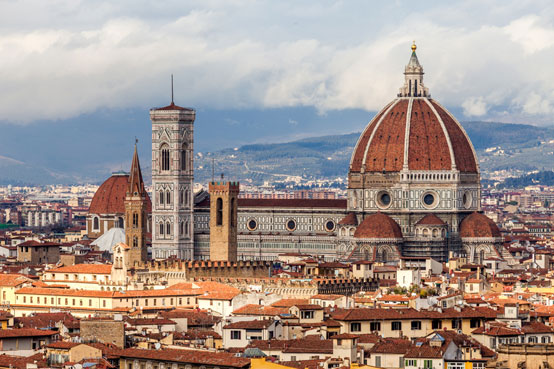

Архитектура Нового времени

Зодчие испокон веков занимались поиском новых архитектурных форм. Каждому историческому периоду были свойственны разные архитектурные стили, но только в эпоху Просвещения появилась необходимость их классифицировать. Была выделена древняя, античная (греческая и римская), средневековая (византийская, романская и готическая) архитектура, а также архитектура Нового времени, которая подарила миру стили ренессанс, барокко и рококо, классицизм.
Именно этот период стал самым ярким, а стили, которые относятся к Новому времени, никогда не выйдут из моды. Позднее в хронологическую классификацию была добавлена архитектура Новейшего времени, охватывающая конструктивизм, арт-деко, модернизм, хай-тек, постмодернизм, а также различные современные стили.
Конечно, такая система классификации была абстрактной, так как чистые стили в архитектуре практически не встречаются. Каждый новый стиль несет в себе что-то от предыдущего и последующего стиля, а направление, вышедшее из моды, не исчезает бесследно.